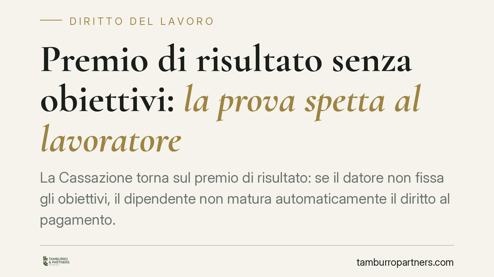

Premio di risultato senza obiettivi: la prova spetta al lavoratore
La Cassazione torna sul premio di risultato: se il datore non fissa gli obiettivi, il dipendente non matura automaticamente il diritto al pagamento. Deve dimostrare la concreta probabilità di aver raggiunto il target. Una pronuncia che sposta l'equilibrio probatorio e impone attenzione sia a chi reclama il bonus sia a chi gestisce i piani incentivanti aziendali.

Il fatto
Un lavoratore rivendica il premio di risultato previsto dal contratto. Il datore, però, non aveva mai fissato gli obiettivi annuali ai quali l'incentivo era subordinato. Da qui la domanda giudiziale: in assenza di target, il premio è comunque dovuto?
Secondo una recente ordinanza della Sezione Lavoro della Corte di Cassazione, la risposta è negativa. La mancata fissazione degli obiettivi costituisce sì un inadempimento del datore, ma non genera un diritto automatico al pagamento dell'intera somma. Il lavoratore deve dimostrare qualcosa di più: la concreta probabilità di aver raggiunto quel risultato.
Inquadramento normativo
Il premio di risultato è una retribuzione variabile, legata al conseguimento di obiettivi predeterminati. Quando quegli obiettivi non vengono fissati, viene meno il parametro stesso su cui misurare il diritto. Non si può pretendere l'adempimento di un'obbligazione il cui presupposto non si è verificato.
La Corte inquadra la questione nella categoria della perdita di chance: non il mancato guadagno certo, ma la perdita della possibilità di conseguire un risultato favorevole. È un danno risarcibile, ma solo se il lavoratore prova che quella possibilità era concreta e apprezzabile.
Qui opera l'art. 2697 c.c.: chi vuole far valere un diritto in giudizio deve provare i fatti che ne costituiscono il fondamento. La perdita di chance non inverte questa regola. L'inadempimento datoriale apre la porta al risarcimento, ma non solleva il dipendente dall'onere di dimostrare che, se gli obiettivi fossero stati fissati, li avrebbe verosimilmente raggiunti.
La pronuncia si colloca in un orientamento consolidato della stessa Sezione Lavoro, che da tempo tratta la perdita di chance come danno autonomo e risarcibile solo in presenza di prova della sua consistenza probabilistica. Non basta allegare l'illegittimità del comportamento datoriale: serve ancorare la pretesa a elementi concreti.
Perché l'onere resta sul lavoratore
Il passaggio delicato è proprio questo. Si potrebbe pensare che, essendo il datore in colpa per non aver fissato gli obiettivi, tocchi a lui provare che il lavoratore non li avrebbe raggiunti. Non è così.
Il risarcimento da perdita di chance non risarcisce l'inadempimento in sé, ma la perdita di una possibilità favorevole. E la possibilità, per essere risarcita, deve prima essere dimostrata nella sua concretezza. L'inadempimento è il presupposto; la chance perduta è l'oggetto della prova. Sono due piani distinti.
In pratica: il lavoratore non può limitarsi a dire "gli obiettivi non sono stati fissati, quindi pagami il premio pieno". Deve ricostruire quali risultati ha effettivamente prodotto, quali performance aziendali si sono registrate, quali target erano stati assegnati in esercizi precedenti o a colleghi comparabili.
Implicazioni pratiche
Per il lavoratore: la mancata fissazione degli obiettivi è un argomento, non una vittoria. Serve costruire un quadro probatorio solido, altrimenti la domanda rischia il rigetto o un riconoscimento parziale.
Per il datore di lavoro: l'omessa fissazione degli obiettivi non è gratuita. Resta un inadempimento, esposto a una domanda risarcitoria. L'assenza di target non mette al riparo da pretese, ma ne alza l'asticella probatoria.
Cosa fare in concreto
- Conservate la documentazione: buste paga, comunicazioni sugli obiettivi, report di performance, dati di produttività aziendale. Sono il materiale su cui si costruisce la prova della chance.
- Verificate gli esercizi precedenti: se negli anni passati gli obiettivi erano stati fissati e raggiunti, quel precedente rafforza la probabilità del risultato.
- Quantificate in modo prudente: impostate la domanda sulla perdita di chance, non sul premio pieno. Una pretesa sovradimensionata indebolisce la posizione.
- Datori di lavoro: formalizzate gli obiettivi: fissateli per iscritto e in tempi congrui. L'omissione genera contenzioso evitabile.
- Consigliamo una valutazione preventiva del materiale probatorio prima di avviare o resistere a un'azione, per calibrare aspettative e strategia.
La distinzione è netta e vale la pena fissarla: il premio non fissato non è un premio dovuto.
Disclaimer
Contributo informativo a cura di Tamburro & Partners Avvocati. Non costituisce parere legale.
Ogni storia di lavoro ha i suoi tempi.
Se gestisci HR e vuoi un confronto su contenzioso, ispezioni o licenziamenti, scrivi allo studio. Ti rispondiamo entro un giorno lavorativo.